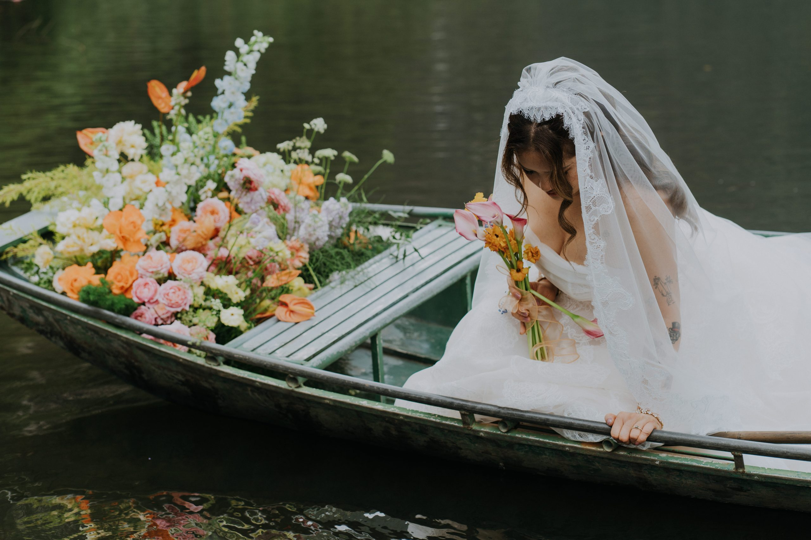
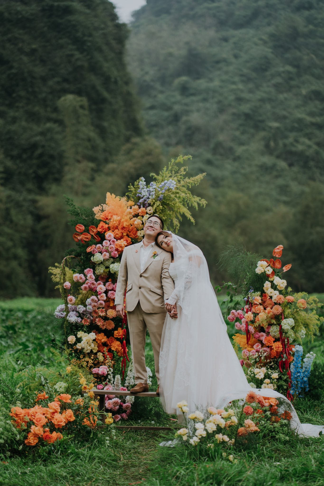
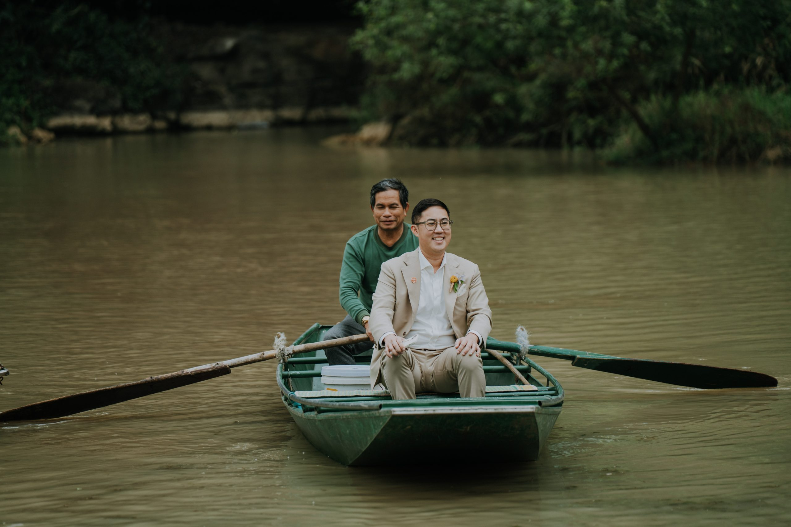

Ninh Binh.
A celebration here can begin before the ceremony: in a boat, between limestone karsts, with the group arriving into a landscape that asks everyone to slow down.
Good for a wedding shaped by the journey in.
Ninh Binh is close enough to Hanoi for a considered escape, yet different enough to change the tempo. River routes, valleys and rural stays make it especially suited to celebrations where arrival, shared time and the setting are part of the story.

Let the landscape set the pace, not the risk.
Trang An’s karst, waterways, caves and rural setting are the reason to come. They also make timing, transfers and access part of the planning brief from the first conversation.
- 01Timing
Plan around the experience you want on the water.
Light, water level and boat access shape what is possible. WIS’s existing guide names different seasonal considerations for river and valley experiences, so we check the proposed route and activity against the actual month rather than selling one universal “best season”.
- 02Arrival
Make the transfer feel like a threshold, not a chore.
Ninh Binh is commonly reached by road from Hanoi in roughly two hours, subject to traffic and the chosen base. Guest transport, luggage timing and the point at which the group comes together must be designed as part of the welcome.
- 03Place
Protect the quietness that brought you here.
A good venue decision weighs the group’s stay, transport access, ceremony sound and the character of the local landscape. We verify event constraints before treating a beautiful place as a workable wedding venue.

Find the base that lets the landscape stay present.
WIS’s existing guide names resort options around Tam Coc, Hoa Lu and the national park. Availability, group accommodation, event rules and transport need a current check, so the shortlist starts with the kind of stay and gathering the wedding needs — not a frozen list of names.
Catherine & Johnny, Ninh Binh.
“Love Flavor” is a useful proof of the place-led approach: the boat, river and flowers are not visual props around the day; they set its arrival and its intimacy. The case is where the guide becomes an actual WIS celebration.

Tell us how you want the gathering to begin.
Bring us the dates, the number of people travelling from Hanoi and the kind of weekend you hope to create. We will turn that into a place brief before the venue search begins.
Begin the conversation